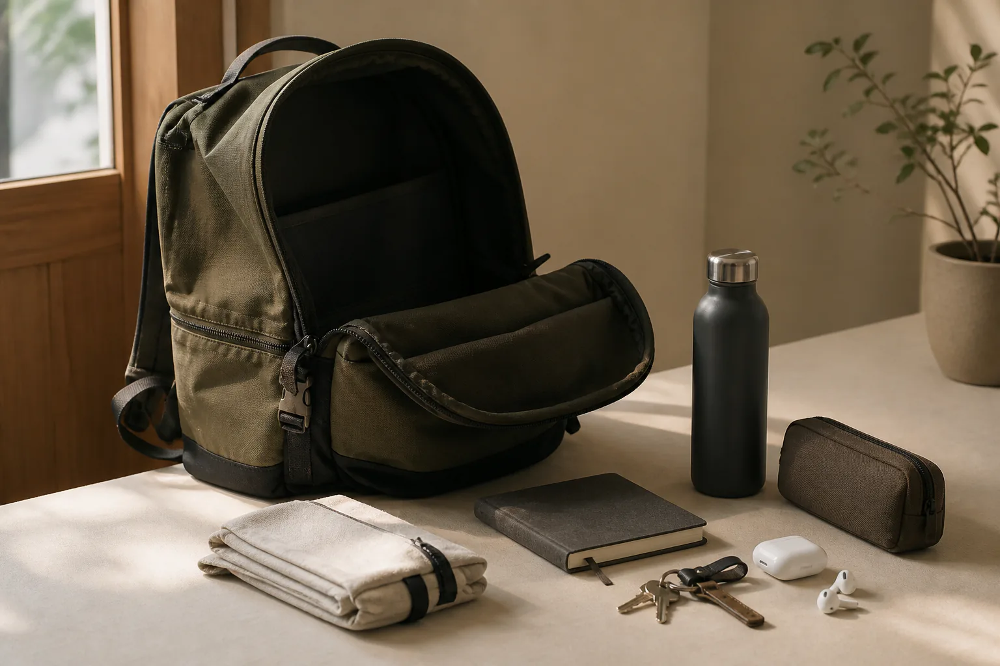

매일 비울 것과 계속 남길 것을 가르는 습관

백팩이 무거워졌다고 느끼면 더 작은 파우치를 고르거나 칸을 다시 나누고 싶어질 수 있습니다. 그러나 가방 안에는 전날 받은 종이와 특정 일정에만 쓴 부품이 그대로 남아 있기도 합니다. 물건을 넣을 시점은 분명해도 꺼낼 시점은 정해져 있지 않은 경우입니다. 매일의 정리는 가방의 모든 자리를 새로 만드는 것보다 어제만 필요했던 것을 빼고 오늘 필요한 묶음을 남기는 방식으로 시작할 수 있습니다. 무엇을 계속 운반할지 판단할 시간이 먼저 필요합니다.
정리할 자리를 하나 정하고 실제 주머니를 차례로 비워봅니다. 큰 공간뿐 아니라 작은 칸에 남은 카드와 종이, 개인 소품도 꺼냅니다. 꺼낸 물건은 한 곳에 모아 어떤 일정에서 넣었는지 확인할 수 있게 합니다. 처음부터 모든 물건을 버릴 대상으로 나누기보다 계속 쓸 것인지, 일정에 따라 추가할 것인지, 집에 둘 것인지 생각하면 됩니다. 가방을 비우는 과정과 물건의 보관 장소를 정하는 과정이 함께 있어야 다시 같은 물건이 들어가지 않습니다.
가져갈 이유를 나누기
| 물건의 상황 | 오늘의 판단 | 돌아갈 자리 |
|---|---|---|
| 늘 사용하는 개인 소지품 | 현재 필요한 구성이 맞는지 확인 | 가방이나 집의 정한 위치 |
| 특정 일정에서만 쓰는 물건 | 오늘 그 일정이 있는지 대조 | 필요할 때 추가할 보관 묶음 |
| 받았거나 임시로 넣은 종이 | 계속 보관할 내용인지 구분 | 문서 보관 장소 또는 적절한 처리 |
항상 가져가는 물건도 구성은 달라질 수 있습니다. 열쇠를 추가했거나 기기를 바꿨다면 이전 묶음에 무엇이 남았는지 확인합니다. 개인에게 꼭 필요한 물건은 실제 사용 조건에 따라 남기고 일반적인 최소 짐 목록에 맞춰 빼지 않습니다. 계속 운반할 이유를 알고 있으면 정리할 때마다 다시 고민할 범위가 줄어듭니다. 가방을 바꾼 날에는 물건을 옮겼다는 사실과 새 위치를 확인하는 일을 함께 해야 다음 외출에서 같은 곳을 찾을 수 있습니다.
일정에 따라 쓰는 물건은 한 묶음으로 보관할 수 있습니다. 출장 도구나 취미 소품을 매일 가방에 두기보다 필요한 날 가져갈 수 있는 자리로 옮기는 방식입니다. 다음에 그 일정이 생기면 현재 안내와 목록을 대조해 추가하면 됩니다. 특정 묶음에 언제 넣었는지 기억하지 못하는 물건이 있다면 실제 용도를 확인하세요. 같은 이름의 소품이 여러 개라면 어느 것을 사용할지 먼저 정해야 파우치의 칸을 늘려도 찾을 범위가 줄어듭니다.
매일 사용할 백팩의 예시로 Himawari No.1208 제품 정보를 참고할 수 있습니다. 실제 소지품을 담은 뒤 자주 쓰는 묶음을 꺼내고 돌려놓는 동작을 확인하는 방식입니다. 가방을 바꿀 생각이라면 현재 짐을 먼저 정리해 놓아야 어떤 공간이 필요한지 비교하기 쉽습니다. 물건의 종류가 많은 이유와 가방에서 찾기 어려운 이유를 나누어 보면 크기를 바꿀지 묶음을 바꿀지도 구체적으로 판단할 수 있습니다.

귀가 때 먼저 꺼낼 물건
집에 돌아오면 사용한 물건과 새로 받은 종이를 먼저 봅니다. 젖은 옷이나 개인 용기처럼 상태가 달라진 것은 각 물건의 관리 안내에 따라 꺼내 정리합니다. 새로운 안내와 영수증은 보관할 목적을 확인하고 필요하다면 집의 문서 자리로 옮깁니다. 가방의 빈 칸에 넣어두면 계속 가지고 다니게 될 수 있으므로 임시 보관에서 다음 위치로 이어지는 동작이 필요합니다. 어디에 둘지 정하지 못한 물건은 따로 판단할 자리에 모아둘 수 있습니다.
매일 전부 비우는 방식이 가능한지 생활 조건도 생각해봅니다. 늦게 귀가해 다음날 바로 같은 일정으로 나가는 사람이라면 임시 물건을 빼고 필수 소지품을 확인하는 짧은 범위부터 정할 수 있습니다. 자주 가방을 바꾸는 사람은 완전히 꺼내 한 곳에서 옮기는 방식이 맞을 수 있습니다. 정리 시간을 숫자로 고정하기보다 빠뜨리지 않아야 할 물건과 계속 쌓이는 것을 먼저 보세요. 반복할 수 있는 동작이어야 다음 외출에서도 이어집니다.
가방에서 꺼낸 소지품을 테이블 여러 곳에 나누면 정리 뒤 다시 찾을 일이 생깁니다. 열쇠와 카드 등 다음 외출에 쓸 물건은 집의 정한 자리나 운반 파우치로 돌려놓습니다. 가방을 비웠다는 사실보다 필요한 물건의 다음 위치가 분명한지가 중요합니다. 가족이 함께 쓰는 물건이 있다면 공용 위치와 개인 위치도 이야기해둘 수 있습니다. 다른 사람이 가져갈 것을 개인 가방에 계속 남겨두지 않으면 서로 찾을 범위가 줄어듭니다.
다음날의 한 가지 변화
다음 일정에서 평소와 다른 일이 있는지 확인합니다. 서류를 제출하거나 운동화가 필요하고 비가 예상되는 날은 기본 묶음에 더할 물건이 생깁니다. 추가할 물건의 실제 외형과 돌아올 상태를 보고 위치를 정하세요. 모든 상황의 짐을 상시 넣어두기보다 그날 필요한 것만 추가하는 방식입니다. 계획이 바뀌면 추가 묶음도 달라질 수 있으므로 전날 준비와 출발 직전 확인을 연결할 수 있습니다.
실제 짐을 담은 뒤에는 여밈이 자연스럽게 닫히는지와 자주 쓸 물건을 찾을 수 있는지 봅니다. 물건을 줄였는데도 찾기 어렵다면 개수보다 묶음의 위치를 바꿀 수 있습니다. 같은 모양의 파우치를 여러 개 쓴다면 구분할 방법이 있는지도 확인하세요. 가방이 작아졌다고 모든 동작이 단순해지는 것은 아니며 큰 가방에도 필요한 묶음만 남길 수 있습니다. 정리의 결과를 수납량 하나로 평가하지 않고 실제 사용에 연결해보면 됩니다.
한동안 계속 남아 있던 물건을 빼냈다면 다시 들어올 조건을 정할 수 있습니다. 여분 케이블은 어떤 기기를 쓰는 날 가져갈지, 취미 소품은 어떤 일정에서 추가할지 적어두면 됩니다. 임시 종이를 정리한 자리는 새로운 종이가 들어왔다가 나갈 자리로 남겨둘 수 있습니다. 매일의 가방은 고정된 물건 목록보다 사용하는 일정과 돌아오는 동작으로 유지됩니다. 오늘만 필요한 묶음을 넣고 그 사용이 끝났을 때 집으로 옮기는 순서가 이어지면 불필요한 짐을 판단하기 쉽습니다.